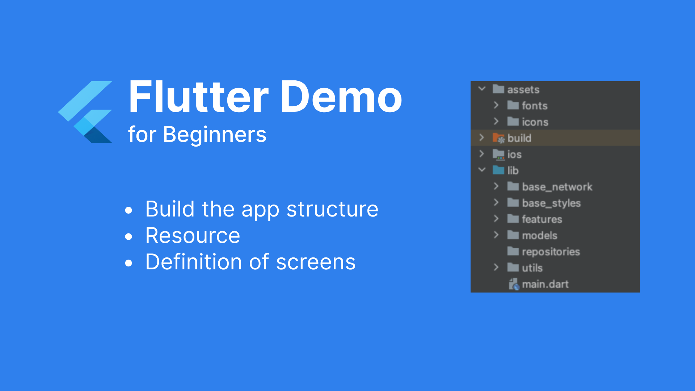

Part 2. Getting Started - Building the Structure
I.Project Initialization
After initializing the Flutter project with Android and iOS platforms, the initial project structure looks like this:

II.Organizing Project Directories

We have a basic structure as follows:
- Base_network: This directory is where we implement the connection from the app to the backend.
- Base_styles: Implementation of the base for colors, fonts, icons.
- Features: A directory containing feature. For example, the "features" directory might contain screens like home, detail, etc.
- Models: The structure of objects in the project.
- Utils: Classes that serve common tasks.
Add necessary resources such as fonts and icons to assets and list them in pubspec.yaml

III.Define the Screens
Inside the "features" directory, let's add the "home" and "detail" screens

With the following content

For convenient screen management, let's add a route_generator.dart file in the lib directory. Here, we will define the screens along with their corresponding names.


And in main.dart, the MyApp widget should now return MaterialApp with the following parameters:
onGenerateRoute: RouteGenerator.generateRoute,initialRoute: '/' (Define the initial screen when the app is opened, which is the "home" screen)
IV.Summary
Through this tutorial, we have successfully built the basic structure of the project, declared resources, and provided a general overview of managing the list of screens in the application.